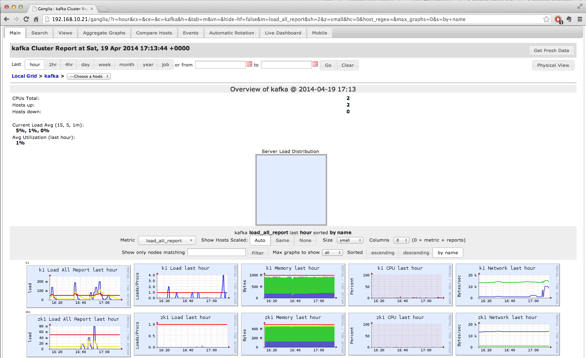

Quick up and running using Scala for Apache Kafka
Quick up and running using Scala for Apache Kafka.
Software versions used in each box (virtual machine running locally) :
Box details :
Use Vagrant to get up and running :
Clone this repository in your home folder for example :
cd ~
git clone https://github.com/isnoopy/scala-kafka.git
Go to to scala-kafka foler and start the VMs :
cd scala-kafka
vagrant up
Once this is done (~10min) :
You can see VM status with :
vagrant status
Current machine states:
zk1 running (virtualbox)
k1 running (virtualbox)
If you want you can login to the machines using 'vagrant ssh ' (zk1 or k1) but you don't need to.
All the tests in src/test/scala/* can be run with :
./sbt test
and should pass :
[info] Total for specification KafkaSpec
[info] Finished in 33 ms
[info] 3 examples, 0 failure, 0 error
[info] Passed: Total 3, Failed 0, Errors 0, Passed 3
[success] Total time: 5 s, completed 11 avr. 2014 16:50:36
You can access the brokers and zookeeper by their IP from your local network without having to go into vm.
bin/kafka-console-producer.sh --broker-list 192.168.10.20:9092 --topic <get his from the random topic created in test>
bin/kafka-console-consumer.sh --zookeeper 192.168.10.21:2181 --topic <get his from the random topic created in test> --from-beginning
Using Ganglia for monitoring (more details), you can check each VM ressource consumption (CPU, RAM, HD etc.) at http://192.168.10.21/ganglia :

And the kafka broker details on node 'k1':
To quickly stop all the VM :
vagrant suspend
==> zk1: Saving VM state and suspending execution...
==> k1: Saving VM state and suspending execution...
OR to completely shutdown all the VM :
vagrant halt
==> zk1: Attempting graceful shutdown of VM...
==> k1: Attempting graceful shutdown of VM...
To start again the boxes (after ’suspend’ or ‘halt’), simply run :
vagrant up
To completely stop and remove all the boxes files :
vagrant destroy
k1: Are you sure you want to destroy the 'k1' VM? [y/N] y
==> k1: Destroying VM and associated drives...
==> k1: Running cleanup tasks for 'shell' provisioner...
==> k1: Running cleanup tasks for 'shell' provisioner...
zk1: Are you sure you want to destroy the 'zk1' VM? [y/N] y
==> zk1: Destroying VM and associated drives...
==> zk1: Running cleanup tasks for 'shell' provisioner...
==> zk1: Running cleanup tasks for 'shell' provisioner...
More on vagrant tools : http://docs.vagrantup.com/v2/getting-started/teardown.html